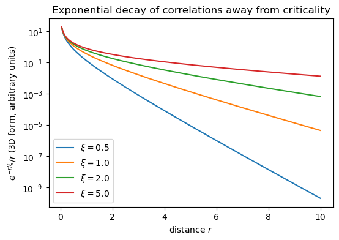
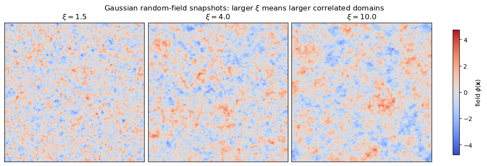

Fluctuations and the Ginzburg Criterion#
These notes extend Landau mean-field theory by allowing the order parameter to fluctuate in space. The goal is to see, from within the Landau framework, when mean-field theory becomes unreliable near a critical point.
We will derive the Gaussian Landau-Ginzburg theory, compute the correlation length and fluctuation heat capacity, and then extract the upper critical dimension and the Ginzburg criterion.
For further reading, consult Arovas 7.7-7.9.
1. Universality and the puzzle of mean-field theory#
The liquid-gas critical point and the Ising critical point have the same type of singular behavior. For example, the density difference between liquid and gas behaves like the magnetization in an Ising magnet:
and
Experimentally, many systems share the same non-mean-field exponent, approximately
This is an example of universality: very different microscopic systems can share the same critical exponents. Landau theory, however, predicts mean-field values such as
So the question is: can a generalized Landau theory explain its own breakdown?
2. From a single order parameter to an order-parameter field#
In basic Landau theory, the order parameter is a single number, for example the total magnetization density
The Landau free energy is expanded as
This assumes a spatially uniform order parameter.
Near a critical point, however, large correlated domains fluctuate. We therefore replace the single number by a slowly varying coarse-grained field
This is not the microscopic spin field; it is a smoothed field defined on scales larger than a coarse-graining length.
3. Coarse graining#
A concrete definition of a coarse-grained field is
where the smoothing kernel is normalized as
The kernel has width of order
so by construction the field varies slowly on shorter distances.
Equivalently, the coarse-grained theory has a short-distance cutoff
Formally, the exact coarse-grained Hamiltonian is obtained by summing over all microscopic configurations that produce a given field:
This is exact but not practical. Landau-Ginzburg instead writes the most general local expansion allowed by symmetry.
4. Landau-Ginzburg free energy#
For a slowly varying field, the effective Hamiltonian can be expanded in powers of the field and its gradients:
Near criticality, the field is small and slowly varying, so we keep only the leading terms:
The coefficient \(a\) changes sign at the mean-field transition. Above \(T_c\) we write
5. The Gaussian approximation#
For now, ignore the nonlinear term \(u\phi^4\). The effective Hamiltonian becomes
This is the Gaussian theory. It should work when fluctuations are small; the Ginzburg criterion will tell us when that assumption fails.
6. Fourier transform solution#
Use the Fourier convention
Then
and the Gaussian Hamiltonian becomes diagonal:
Define
Since \(\phi(\mathbf{x})\) is real,
So modes \(\mathbf{q}\) and \(-\mathbf{q}\) are not independent in the Gaussian integral.
For a complex Gaussian variable \(z=x+iy\),
Therefore, up to unimportant constants,
The singular part is controlled by
7. Correlation function#
The two-point correlation function is
Using the Fourier expansion,
Translation invariance forces
For the Gaussian theory,
So
In the thermodynamic limit,
8. Correlation length#
Rewrite the denominator as
where, for \(T>T_c\),
\(\xi\) is the correlation length. Below \(T_c\) one again finds \(\xi \sim |t|^{-1/2}\) in Gaussian theory, though with a different nonuniversal amplitude.
At criticality, \(a\to 0\) and therefore
At \(a=0\), the correlation function has a power-law form:
Away from criticality, correlations decay exponentially. In three dimensions,
More generally, for large \(r\) at fixed \(\xi\),
Show code cell source
import numpy as np
import matplotlib.pyplot as plt
r = np.linspace(0.05, 10, 400)
xis = [0.5, 1.0, 2.0, 5.0]
plt.figure(figsize=(6, 4))
for xi in xis:
C = np.exp(-r/xi)/r
plt.plot(r, C, label=fr"$\xi={xi}$")
plt.yscale("log")
plt.xlabel(r"distance $r$")
plt.ylabel(r"$e^{-r/\xi}/r$ (3D form, arbitrary units)")
plt.title("Exponential decay of correlations away from criticality")
plt.legend()
plt.show()

Since
we obtain
So the Gaussian theory predicts the mean-field exponent
9. Fluctuation contribution to the heat capacity#
The singular part of the Gaussian free energy gives a fluctuation contribution to the heat capacity.
The heat capacity is
Since
and
one finds, up to nonsingular prefactors,
Equivalently,
10. UV versus IR divergences#
The integral can fail for two distinct reasons.
Ultraviolet divergence#
Large \(q\) corresponds to short distances. The continuum theory incorrectly includes fluctuations down to arbitrarily small scales.
But the coarse-grained field was only meant to vary slowly on scales larger than \(a_0\). Therefore we introduce a cutoff
Dependence on \(\Lambda\) is not universal because it depends on microscopic details.
Infrared divergence#
Small \(q\) corresponds to long distances. As \(t\to 0\), the correlation length diverges and long-wavelength modes dominate. This is the physically important critical divergence.
11. Scaling of the fluctuation heat capacity#
With the cutoff included,
Rescale momenta by
Then
For large \(\xi\Lambda\), the integral behaves as
Therefore the singular fluctuation contribution behaves as
Because
for \(D<4\) the fluctuation contribution scales as
Thus for \(D\le 4\), fluctuations produce a singular thermodynamic contribution. This identifies
as the upper critical dimension of the scalar \(\phi^4\) theory.
Above four dimensions, mean-field theory is self-consistent near criticality. At and below four dimensions, fluctuations increasingly modify it.
12. The Ginzburg criterion#
Mean-field theory is valid when order-parameter fluctuations inside a correlation volume are small compared with the mean-field order parameter itself.
Below \(T_c\), Landau theory gives
A Gaussian estimate of the fluctuations averaged over a region of size \(\xi\) gives, up to constants of order one,
The Ginzburg criterion is the requirement
Using \(\xi \sim \xi_0 |t|^{-1/2}\) with
this becomes
where, up to numerical factors,
For \(|t|\gg t_G\), fluctuations are relatively small and mean-field theory is approximately valid. For \(|t|\lesssim t_G\), fluctuations dominate and mean-field theory must be corrected.
At \(D=4\) the criterion is modified by logarithms, and for \(D>4\) mean-field theory becomes asymptotically self-consistent sufficiently close to criticality.
13. Physical picture#
For \(T>T_c\), the system is organized into fluctuating domains of size approximately
As the critical point is approached,
The system no longer consists of small, weakly correlated patches. Instead, fluctuations occur on all scales, so a theory of one uniform order parameter is no longer enough.
At criticality, there is no characteristic finite domain size. The correlations become scale-free:
in the Gaussian theory.
Show code cell source
import numpy as np
import matplotlib.pyplot as plt
rng = np.random.default_rng(7)
N = 120
xis = [1.5, 4.0, 10.0]
kx = 2 * np.pi * np.fft.fftfreq(N)
ky = 2 * np.pi * np.fft.rfftfreq(N)
KX, KY = np.meshgrid(kx, ky, indexing='ij')
q2 = KX**2 + KY**2
def gaussian_field(xi):
# Use the Gaussian Landau-Ginzburg structure factor S(q) ~ 1/(xi^-2 + q^2).
spectrum = 1.0 / (xi**-2 + q2)
spectrum[0, 0] = 0.0
noise = rng.normal(size=(N, N // 2 + 1)) + 1j * rng.normal(size=(N, N // 2 + 1))
field = np.fft.irfft2(np.sqrt(spectrum) * noise, s=(N, N))
field -= field.mean()
field /= field.std()
return field
fields = [gaussian_field(xi) for xi in xis]
vmax = max(np.max(np.abs(f)) for f in fields)
fig, axes = plt.subplots(1, 3, figsize=(11, 3.6), constrained_layout=True)
for ax, xi, field in zip(axes, xis, fields):
im = ax.imshow(field, cmap='coolwarm', vmin=-vmax, vmax=vmax, origin='lower')
ax.set_title(fr'$\xi={xi}$')
ax.set_xticks([])
ax.set_yticks([])
fig.colorbar(im, ax=axes, shrink=0.85, label=r'field $\phi(\mathbf{x})$')
fig.suptitle(r'Gaussian random-field snapshots: larger $\xi$ means larger correlated domains', y=1.04)
plt.show()

These snapshots are sampled from a Gaussian random field with structure factor
They are not a full interacting Ising simulation, but they capture the key Gaussian message: as \(\xi\) grows, the field organizes into larger correlated patches, and near criticality no short finite length scale remains.
14. Summary#
The Landau-Ginzburg theory replaces the uniform order parameter by a fluctuating field:
The Gaussian approximation is exactly solvable and gives
The correlation length scales as
The fluctuation correction to the heat capacity scales as
Thus \(D_c=4\) is the upper critical dimension for the scalar short-range \(\phi^4\) theory. Below four dimensions, sufficiently near criticality, fluctuations invalidate naive mean-field theory.
Additional Exercises#
Starting from the Gaussian Hamiltonian, derive
\[ \left\langle \phi(\mathbf{q})\phi(-\mathbf{q})\right\rangle = \frac{1}{\beta(a+\kappa q^2)}. \]Evaluate the Fourier integral for \(D=3\) and show that
\[ \beta C(r)=\frac{1}{4\pi\kappa}\frac{e^{-r/\xi}}{r}. \]Show explicitly that
\[ \int_0^{\xi\Lambda}d\bar q\,\frac{\bar q^{D-1}}{(1+\bar q^2)^2} \]diverges for \(D>4\), logarithmically for \(D=4\), and converges for \(D<4\).
Interpret physically why \(D=4\) is the upper critical dimension for the \(\phi^4\) theory.